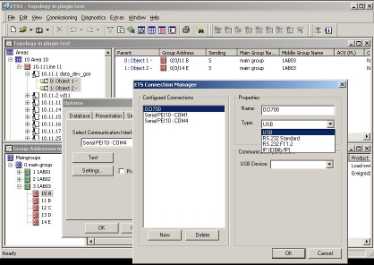
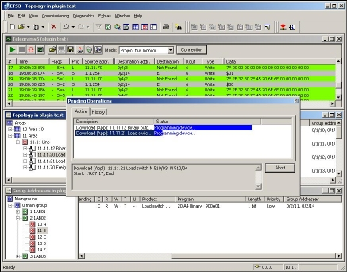
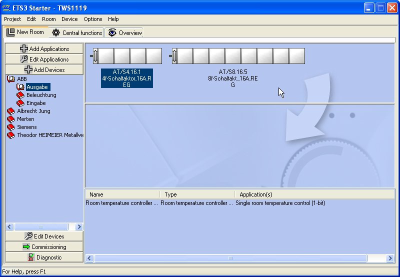
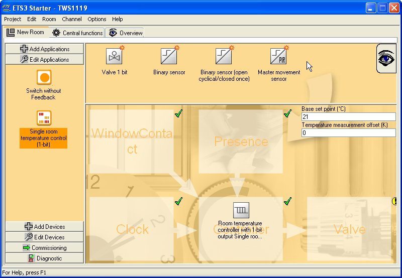

|
Software Tools for KNX |
Konnex Association presents a spectrum of standard software tools, covering a wide range of tasks. Here’s a compact overview:
For the trained professional, “ETS Pro” is the common tool for the design, configuration and diagnostics of KNX S-mode (and EIB) installations and projects.
ETS is manufacturer independent, permitting the user to import catalogues (“product databases”) from any vendor of certified KNX S-mode (or EIB) products.
ETS courses are currently offered by about 90 certified KNX Training Centres worldwide (2004); it is on the market since 1993, with close to 20 thousand users.
From
April 2004
onwards, the fully new ETS3 will replace its successful predecessor
ETS2.


To order ETS Pro or obtain more information, please contact mailto:sales@eiba.com.
The intuitive, graphical entry-level tool for newcomers: “ETS Starter” is the first stepping-stone into the world of tool-based realisation of smaller KNX S-mode (and EIB) installations!
Available
from April
2004 onwards, ETS3 Starter supports a selected subset of products and
functionalities, using an extended (but compatible) version of the
manufacturer “product database” catalogues from ETS Pro.
 
To order ETS Starter or obtain more information, please contact mailto:sales@eiba.com.
For vendors of certified KNX S-mode products, this toolkit includes all necessary editors and plug-in API descriptions, to produce ETS “product database” catalogues, allowing the users of ETS Pro or ETS Starter to integrate your products in their projects.
To order the ETS Toolkit for Manufacturers or obtain more information, please contact mailto:sales@eiba.com.
The KNX/EIB OPC Server provides Windows-PC-based applications with “hot” read- and write-access to run-time data and events on the bus.
OPC (“OLE for Process Control”) is the de facto standard API model in the Windows world, for SCADA (Supervision, Control & Automatic Data Acquisition) applications. Thanks to this model, in combination with the direct import of ETS project data, PC programmers can interact with the KNX bus, even without deep knowledge of the KNX protocol!
To order the KNX/EIB OPC Server or obtain more information, please contact mailto:sales@eiba.com.
HSOBS
is a similar tool to EITT, however for use in
conjunction with KNX TP0 and PL132 products.
To order HSOBS or obtain more information, please contact : charles_teyssier@mail.schneider.fr.
©
Copyright 2002 - 2013, Konnex
Association